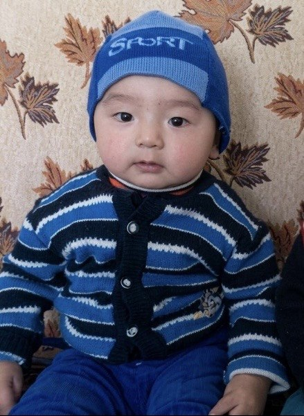

Sharapidinov Alisher
Алишер — главная звезда всей семьи. Где он только не побывал. О его рисунках знает каждый.
Терпение и труд всё перетрут — его точное описание. Хотите почилить? Идите к нему.
fav color:
generation:
Z
Childhood moments
